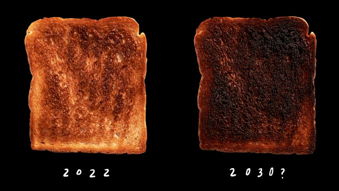

𝔇𝔜ℜ𝔈ℌ𝔄𝔘𝔊𝔈𝔑
Posts
2022-12-04
2 / 2
Corona
Corona Tider - i Spania
2020-04-30
Det er Corona-tider. Jeg sitter i epidemi-husarrest på Gran Canaria. Spania er hardt truffet - og restriksjonene sterke og strenge. “Quedate en Casa” heter det her: “Bli Hjemme” på godt norsk. På noen få uker har verden blitt ‘snudd på hodet’ - det som var…
Kulturell identitet
Kulturell identitet
2017-11-16
Catalonia kjemper for sin uavhengighet om dagen. Siden 1714 - da de ulykkeligvis valgte ‘feil’ side i den spanske arvefølgekrigen - har de vært underlagt spansk (dvs. kastiljansk) styre. Katalonsk språk og kultur har vært undertrykt - helt frem til Franco’s død i 1975, men også på…
Forskninsgpolitikk
Politikk og forskning
2017-11-03

Statistisk sentralbyrå (SSB) har regnet på norsk økonomi med og uten innvandring fra 2016 til 2100. […] Med innvandring må petroleumsformuen deles på svært mange flere. […] Stadig større andel innvandrere antas å ville komme fra ikke-vestlige land og og ha lavere sysselsettingsandel og…
Tilhørighet
Sjøen og Skyene og Tretoppene
2017-07-08
Dyrehaugen er min plass på jorden. Under tak på verandaen finnes det intet bedre enn å skode ut i verden - mot sjøen, mot skyene og mot tretoppene. Dette er min scene - et endeløst skuespill av lys og natur - i stillstand - og i bevegelse - inniblandt også med innslag fra dyreriket - fugler,…
««
«
1
2
»
»»
Please enable JavaScript to view the
comments powered by Disqus.
comments powered by
Disqus